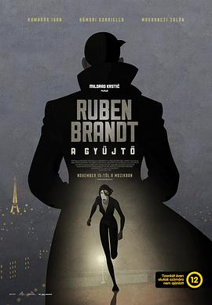

盗梦特攻队 / Ruben Brandt, a gyüjtö
又名：盗画梦惊魂(港) / 收藏家鲁本·勃兰特 / 鲁本·勃兰特，一个收藏家 / 收藏家 / Ruben Brandt, Collector
最佳预定
作品信息
| 导演 | 米洛拉德·科斯蒂奇 |
| 编剧 | 米洛拉德·科斯蒂奇 / 拉德米拉‧罗兹科夫 |
| 主演 | 伊万·卡马拉斯 / 加布里瑞拉·哈默里 / 佐兰·马克兰兹 / 乔鲍·马顿 / 保罗‧贝兰托尼 / 马特·戴维尔 / 卡塔琳‧东比 / 亨利‧格兰特 / 彼得·林卡 / 马泰‧梅萨罗什 / 加博尔·纳吉帕尔 / 维吉尼亚‧普罗德 |
| 类型 | 动画 / 犯罪 |
| 制片国家/地区 | 匈牙利 |
| 语言 | 英语 / 匈牙利语 |
| 上映日期 | 2018-08-09(洛迦诺电影节) / 2018-11-15(匈牙利) |
| 片长 | 94分钟 |
| IMDb | tt6241872 |
最后一次看到是 2026-08-12T21:11:38+08:00 · 豆瓣原页